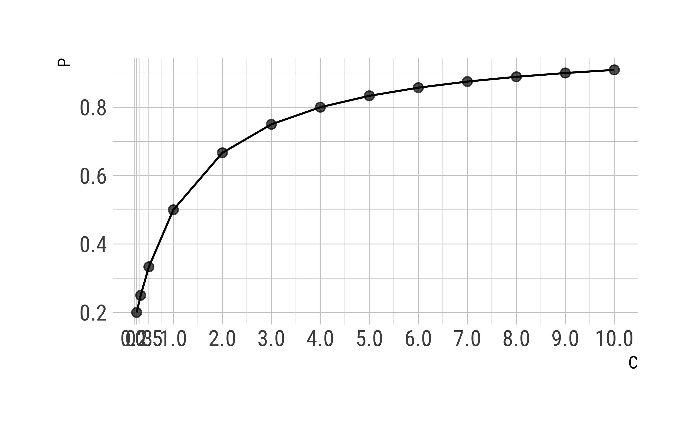
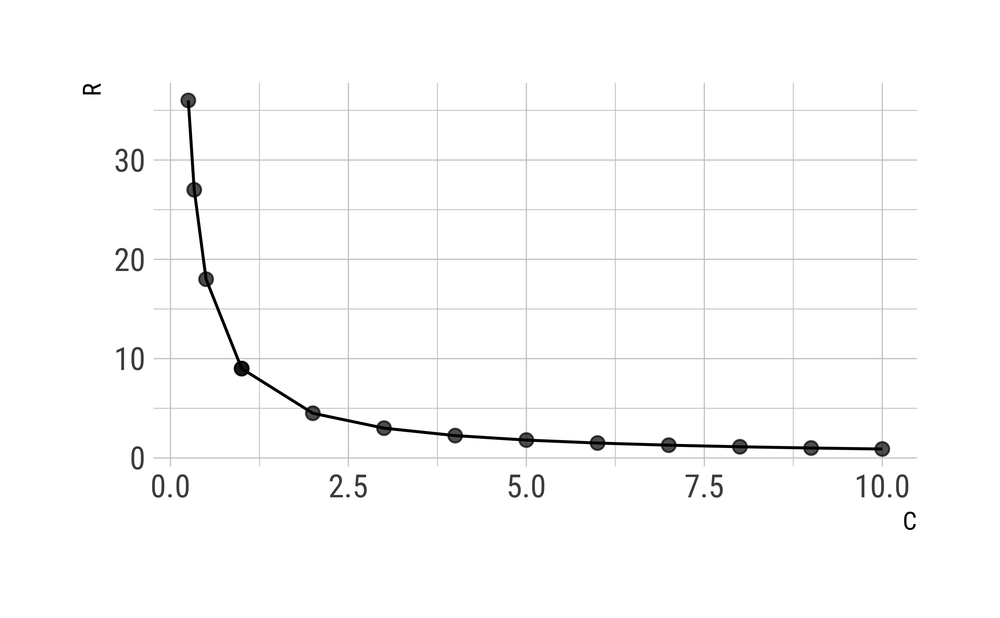

library(tidyverse)
library(gt)
Jedes dritte Bett mit Geimpften belegt?!
Kürzlich (12.10.2021) war u.a. in der Bildzeitung zu lesen,
dass jeder dritte Corona-Tote geimpft war.
Der Artikel bezieht sich auf das RKI als Quelle.
Ähnliche Zahlen waren an diversen Orten zu lesen.
Frage: Wie viele Menschen mit Corona wurden ins Krankenhaus eingeliefert?
Schauen wir zunächst, wie viele Menschen in letzter Zeit (KW41-44; diese Zahl ist explizit ausgewiesen im aktuellen RKI-Wochenbericht).
covid_kw_41_44 <-
tibble::tribble(
~age, ~cases, ~hosp_cases, ~hosp_cases_vacc,
"12-17", 23119L, 119L, 4L,
"18-59", 159647L, 3637L, 825L,
"18-59", 37735L, 5587L, 2522L
)
covid_kw_41_44 %>%
gt()
| age |
cases |
hosp_cases |
hosp_cases_vacc |
| 12-17 |
23119 |
119 |
4 |
| 18-59 |
159647 |
3637 |
825 |
| 18-59 |
37735 |
5587 |
2522 |
die Daten sind RKI-2021-11-11 entnommen (S. 22).
cases: Symptomatische COVID-19-Fälle (mit Angabe Impfstatus)hosp-cases: Hospitalisierte COVID-19-Fälle (symptomatisch mit Angabe Impfstatus)hosp-cases-vacc: Hospitalisierte COVID-19-Fälle mit wahrscheinlichem Impfdurchbruch
Antwort: Hospitalisierungsquoten lagen jüngst zwischen 1% und 15%
Berechnen wir die Anteile von (geimpften) Krankenhauseinweisungen für den Berichtszeitraum KW 41-44.
covid_kw_41_44 <-
covid_kw_41_44 %>%
mutate(prop_hosp = hosp_cases / cases,
prop_hops_vacc = hosp_cases_vacc / hosp_cases)
covid_kw_41_44 %>%
gt() %>%
fmt_number(where(is.numeric), decimals = 2)
| age |
cases |
hosp_cases |
hosp_cases_vacc |
prop_hosp |
prop_hops_vacc |
| 12-17 |
23,119.00 |
119.00 |
4.00 |
0.01 |
0.03 |
| 18-59 |
159,647.00 |
3,637.00 |
825.00 |
0.02 |
0.23 |
| 18-59 |
37,735.00 |
5,587.00 |
2,522.00 |
0.15 |
0.45 |
Man sieht, dass die Hospitalisierungsquote bei Jugendlichen bei 1% lag, bei 18-59-Jährigen bei 2% und bei den über 60-Jährigen bei 15% (Berichtszeitraum KW 41-44 diesen Jahres).
Frage: Ist jede Dritte Corona-Tote geimpft?
Im aktuellen RKI-Wochenbericht (11.11.2021, KW 45) ist auf S. 22 zu lesen,
jeweils in Bezug auf die KW 41-43 und für die Altersgruppe 60+:
- Anteil wahrscheinliche Impfdurchbrüche an hospitalisierten COVID-19-Fällen: 45,1%
- Anteil wahrscheinliche Impfdurchbrüche an COVID-19-Fällen auf Intensivstation: 36,0%
- Anteil wahrscheinliche Impfdurchbrüche an verstorbenen COVID-19-Fällen: 41,7%
Für die Altersgruppe 18-59 Jahren sehen die Zahlen hingegen besser zugunsten der Impfung aus:
- Anteil wahrscheinliche Impfdurchbrüche an hospitalisierten COVID-19-Fällen: 22,7%
- Anteil wahrscheinliche Impfdurchbrüche an COVID-19-Fällen auf Intensivstation: 12,9%
- Anteil wahrscheinliche Impfdurchbrüche an verstorbenen COVID-19-Fällen: 18,5
Ergänzen wir unsere Tabelle entsprechend:
covid_kw_41_44 <-
covid_kw_41_44 %>%
mutate(
cases_dead = c(0, 54, 840),
cases_dead_vacc = c(0, 10, 350),
prop_cases_dead = cases_dead_vacc / cases_dead)
covid_kw_41_44 %>%
select(age, contains("dead")) %>%
gt() %>%
fmt_number(where(is.numeric), decimals = 2)
| age |
cases_dead |
cases_dead_vacc |
prop_cases_dead |
| 12-17 |
0.00 |
0.00 |
NaN |
| 18-59 |
54.00 |
10.00 |
0.19 |
| 18-59 |
840.00 |
350.00 |
0.42 |
Antwort: Ja, diese Zahl stimmt oder ist höher
Berechnen wir die Summe der Coronafälle, die Summe der hospitalisierten Fälle sowie Summe:
covid_kw_41_44 %>%
summarise(sum_cases = sum(cases),
sum_hosp_cases = sum(hosp_cases),
sum_hops_cases_vacc = sum(hosp_cases_vacc))
## # A tibble: 1 × 3
## sum_cases sum_hosp_cases sum_hops_cases_vacc
## <int> <int> <int>
## 1 220501 9343 3351
Die Summe ist jeweils über alle Altersgruppen berechnet.
Teilen wir die Summe der hospitalisierten Fälle mit Impfung (sum_hos_cases_vacc) durch die Summe der hospitalisierten Fälle, bekommen wir den Anteil der geimpften hospitalisierten Fälle (“Anteil der wahrscheinlichen Impfdurchbrüchen an hospitalisierten Covid-19-Fällen”).
covid_kw_41_44 %>%
summarise(sum_cases = sum(cases),
sum_hosp_cases = sum(hosp_cases),
sum_hops_cases_vacc = sum(hosp_cases_vacc)) %>%
mutate(across(everything(), as.integer)) %>%
mutate(prop_hosp_vacc = sum_hops_cases_vacc / sum_hosp_cases) %>%
gt() %>%
fmt_number(4, decimals = 2)
| sum_cases |
sum_hosp_cases |
sum_hops_cases_vacc |
prop_hosp_vacc |
| 220501 |
9343 |
3351 |
0.36 |
Wir bekommen als Zahl etwa die Zahl, die die Bildzeitung berichtete, ein rundes Drittel der Coronafälle im Krankenhaus sind geimpft.
Der Anteil von Impfdurchbrüchen an verstorbenen Covid-19-Fällen für die Altersgruppe 60+ ist also höher als die Bildzeitung berichtete,
nämlich bei 41.7% laut RKI-Wochenbericht vom 11.11.2021 (im Folgenden als RKI-2021-11-11 bezeichnet);
vermutlich bezog sich die Bildzeitung auf einen älteren Wochenbericht.
Für die Altersgruppe 18-59 ist der Anteil an Impfdurchbrüchen bzw. Todesfällen aber deutlich geringer.
Geimpft wird dabei so definiert vom RKI:
Dazu zählen alle in Deutschlandabgeschlossenen Impfserien (2 Dosen Comirnaty (BioNTech/Pfizer), Spikevax (Moderna),
Vaxzevria (AstraZeneca) einschließlich Kreuzimpfungen bzw. 1 Dosis Janssen (Johnson & Johnson)) , wenn mindestens zwei Wochen seit der letzten Dosis vergangen sind.
Auf diese Definition stützen wir uns im Folgenden.
Frage: Wenn es so viele geimpfte Corona-Opfer gibt, dann ist die Impfung also kaum wirksam?
Das Argument, das hinter dieser Frage steht (und sie bejaht), geht etwa so:
Wenn es fast genauso viele Coronatote bei den Geimpften gibt wie bei den Ungeimpften, dann ist die Impfung (fast) nicht wirksam.
Gleiche Todesrate (zwischen Geimpften und Ungeimpften) bedeutet gleicher Schutz vor Corona,
oder etwa nicht?
Dazu die Bildzeitung:
knitr::include_graphics("https://media-exp1.licdn.com/dms/image/C4D22AQFborIm6TnOVA/feedshare-shrink_1280/0/1636900096574?e=1640217600&v=beta&t=HVPXsel7xx-bTK7i7nuWnpFylJVFOFvf9T44hPXWmmM")

Antwort: Der Anteil der Impfdurchbrüche ist abhängig von der Impfquote
Die Kursversion der Antwort wabt schon seit einiger Zeit durch das Netz und die Nachrichten:
Wären 100% der Menschen geimpft, so wären auch 100% der Coronatoten geimpft.
Der Anteil der Coronatoten in der Allgemeinbevölkerung ist also abhängig von der Impfquote.
Und ja, auch unter Geimpften gibt es Menschen, die aufgrund (oder mit) Corona sterben. Nur sind es weniger und wenn ja, wie viele weniger?
Frage: Wie hoch ist die Impfquote unter den Coronatoten?
Wie hoch ist die Impfquote? Zuerst sollten wir festhalten, dass der Großteil der Coronatoten hochbetagt ist (RKI-2021-11-11):
Unter den insgesamt 1.393 COVID-19-Fällen mit Impfdurchbrüchen, die verstorben sind, waren 995 (71 %) 80 Jahre und älter. Das spiegelt das generell höhere Sterberisiko - unabhängig von der Wirksamkeit der Impfstoffe - für diese Altersgruppe wider.
An anderer Stelle schreibt das RKI mit Bezug auf das Paul-Ehrlich-Institut (PEI):
In diesem Sicherheitsbericht des PEI heißt es: “Das Risiko für einen schweren und auch tödlichen Verlauf einer SARS-CoV-2-Infektion steigt mit steigendem Alter rapide an. Sehr alte Menschen sind am meisten gefährdet, an der Infektion zu versterben. …”
Antwort: Die Impfquote beträgt ca. 85% unter den Coronatoten
Laut dem Impfquoten-Monitoring des RKI (Stand 15.11.2021) ist in der Altersgruppe 60+ etwa ein Anteil von 85.6% geimpft. Die gleiche Zahl ist im Impfdashboard, 15.11.21, 20.59h zu lesen.
Das RKI geht davon aus, dass die Impfquote nicht exakt erfasst wurde.
Wie in anderen Meldesystemen auch wird bei den über das Digitale Impfquotenmonitoring erfassten Impfquoten von einer gewissen Untererfassung ausgegangen.
Die Bundesregierung, 8.10.2021 geht davon aus,
dass mehr Menschen geimpft wurden, als es die bekannten Statistiken angeben:
Nach einer neuen Erhebung des Robert-Koch-Instituts (RKI) ist die Impfquote unter den Erwachsenen in Deutschland höher als bislang angenommen.
Die Impfquote ist also womöglich etwas höher als 85.6% bei der Altersgruppe 60+: “Eine Unterschätzung der Quote von bis zu 5 Prozentpunkten war bereits zuvor berichtet worden” (RKI-2021-11-11, S. 19).
Für speziell die Altersgruppe 80+ habe ich keine Zahlen zur Impfquote gefunden.
Für das folgende Rechenbeispiel gehen wir von 90% Impfquote bei den Coronatoten aus. Auch wenn die Zahl nicht exakt stimmt (aber grob vermutlich schon), bleiben die Schlussfolgerungen gleich.
Frage: Welcher Anteil der Geimpften fände sich unter den Toten, wenn die Impfung nichts helfen würde?
“Nichs helfen” meint, dass die Impfung nicht zu einer Reduktion des Todesrate (im Zusammenhang mit einer Corona-Erkrankung) führen würde.
Antwort: Würde die Corona-Impfung nicht helfen, wäre der Anteil der Geimpften an den Toten gleich zum Anteil der Geimpften an der Bevölkerung
Ein Beispiel: Wenn der Anteil der Linkshänder ca. 10% der Allgemeinbevölkerung beträgt und
wenn Händigkeit unabhängig von der Coronasterblichkeit ist,
so sollten auch 10% der Coronatoten Linkshänder sein.
Auf unsere Frage bezogen: Wenn der Anteil der Geimpften ca. 90% der relevante Bevölkerungsgruppe ausmacht und
wenn Impfen unabhängig von der Coronasterblichkeit ist,
so sollten auch 90% der Coronatoten geimpft sein.
Frage: Kann ich dazu mal ein einfaches Rechenbeispiel sehen?
Betrachten wir ein Beispiel, in dem Impfen und Sterblichkeit unabhängig sind voneinander.
Dazu definieren wir, dass die Sterblichkeit (Letalität) 1% beträgt, das ist leicht zu rechnen. Uns geht es in diesem Beispiel nur um die Verdeutlichung, welche Zahlen bei Unabhängigkeit zu erwarten sind.
Statista zitiert eine Letalitätsrate von etwa 2% für Deutschland (11.11.2021).
Bei Quarks ist von einer höheren Sterblichkkeit zu lesen für die Altersgruppe, die wir betrachten (60+ bzw. 80+).
Auf diese Schätzung werden wir im Verlauf noch zurückgreifen.
Antwort: Hier ist ein Rechenbeispiel, das Unabhängigkeit von Impfung und Wirksamkeit annimmt
Betrachten wir der Einfachheit halber eine Gruppe von 1000 Leuten. 90% dieser Menschen sind geimpft (10% nicht). Die Sterblichkeit beträgt 1% und zwar unabhängig von der Impfquote. Mit anderen Worten: Sterblichkeit und Impfquote sind unabhängig voneinander.
tibble::tribble(
~Status, ~Geimpft, ~Ungeimpft, ~Summe,
"verstorben", 9L, 1L, 10L,
"lebendig", 891L, 99L, 990L,
"Summe", 900L, 100L, 1000L
) %>%
gt()
| Status |
Geimpft |
Ungeimpft |
Summe |
| verstorben |
9 |
1 |
10 |
| lebendig |
891 |
99 |
990 |
| Summe |
900 |
100 |
1000 |
Jetzt wissen wir also, welchen Anteil von Geimpften wir bei den Verstorbenen zu erwarten haben,
wenn die Impfung keine Wirkung haben sollte.
Das Beispiel zeigt: Bei den Geimpften ist die Chance zu versterben (im Folgenden mit C abgekürzt) etwa 1% (9/891) und bei den Ungeimpften ebenfalls:
(letalität_geimpft <- 9/891)
## [1] 0.01010101
(letatität_ungeimpft <- 1/99)
## [1] 0.01010101
Das Chancenverhältnis (zwischen Geimpften und Ungeimpften) an Corona zu versterben, ist also 1:1=1.
Der Anteil der Geimpften unter den Toten beträgt 9/10=90%.
Achtung: Das ist nur ein Rechenbeispiel, um zu zeigen, welche Zahlen zu erwarten wären, wenn die Impfung wirkungslos sein sollte. Das Beispiel zeigt nicht, dass die Impfung wirkungslos ist.
Welchen Anteil an Geimpften unter den Toten gäbe es, wenn die Impfung schützen würde?
Gehen wir der Einfachheit halber davon aus, dass die Impfung die Chance des Versterbens halbiert (mal 0.5). Wir bleiben bei einer Impfquote von 90% und gehen jetzt, realistischer, von einer Letalität von 1% bei den Geimpften und von 2% bei den Ungeimpften (C=1% bzw. C=2%). Die Sterblichkeit ist in diesem Beispiel also bei den Geimpften halb so groß wie bei den Ungeimpften (Faktor 0.5).
tibble::tribble(
~Status, ~Geimpft, ~Ungeimpft, ~Summe,
"verstorben", 9L, 2L, 11L,
"lebendig", 891L, 98L, 989L,
"Summe", 900L, 100L, 1000L
) %>%
gt()
| Status |
Geimpft |
Ungeimpft |
Summe |
| verstorben |
9 |
2 |
11 |
| lebendig |
891 |
98 |
989 |
| Summe |
900 |
100 |
1000 |
Das Chancenverhältnis in diesem Beispiel beträgt also 1%:2% = 1/2 = 0.5.
Der Anteil der Geimpften unter den Toten beträgt 9/11=82%.
9/11
## [1] 0.8181818
Wir haben die Chance zu versterben halbiert, aber der Anteil der Geimpften unter den Toten hat sich (nur) um ca. 8% verringert.
Frage: Was ist der Zusammenhang von Chancen und Anteil?
Unter einer Chance (C oder c) versteht man das Verhältnis von positiven zu negativen Fällen.
In unserem Fall: Das Verhältnis von verstorben zu lebendig.
Beispiel: 1 verstorbene Person (von 100) vs. 99 lebendige Personen (von 100) ergibt eine Chance von 1/99 zu versterben.
Der Anteil der Überlebenden (oder Verstorbenen) kann als Schätzwert für die Wahrscheinlichkeit (Pr oder p, wie Probability) herhalten.
Beispiel: Stirbt 1 von 100 Personen, so ist die Wahrscheinlichkeit \(p\) zu versterben 1/100=1%, und die Wahrscheinlichkeit, nicht zu versterben (also zu überleben) 100%-1%=99%.
Man kann einfach umrechnen
So kann man von der Chance \(c\) auf die Wahrscheinlichkeit \(p\) umrechnen:
\[\begin{align}
c &= \frac{p}{1-p} \\
c(1-p) &= p \\
c-cp &= p \\
c &= p + cp \\
c &= p(1+c) \\
p &= \frac{c}{c+1}
\end{align}\]
Frage: Wie sind die Anteile der Geimpften unter den Toten in Abhängigkeit der Chance?
Wir haben gerade gesehen, dass sich der Anteil der Geimpften unter den Toten (nur relativ) wenig verändert, obwohl die Chance, zu versterben sich halbiert hat (für Geimpfte) bzw. sich verdoppelt hat für Ungeimpfte, relativ zur Chance zu versterben für Geimpfte.
Antwort: Die Anteile verändern sich relativ wenig, wenn man die Chancen mehrfach verringert
d <-
tibble(C = c(10:1, 0.5, 1/3, 1/4),
P = C / (C+1),
negP = 1-P,
negC = 1
)
d %>%
gt() %>%
fmt_number(1:3, decimals = 2)
| C |
P |
negP |
negC |
| 10.00 |
0.91 |
0.09 |
1 |
| 9.00 |
0.90 |
0.10 |
1 |
| 8.00 |
0.89 |
0.11 |
1 |
| 7.00 |
0.88 |
0.12 |
1 |
| 6.00 |
0.86 |
0.14 |
1 |
| 5.00 |
0.83 |
0.17 |
1 |
| 4.00 |
0.80 |
0.20 |
1 |
| 3.00 |
0.75 |
0.25 |
1 |
| 2.00 |
0.67 |
0.33 |
1 |
| 1.00 |
0.50 |
0.50 |
1 |
| 0.50 |
0.33 |
0.67 |
1 |
| 0.33 |
0.25 |
0.75 |
1 |
| 0.25 |
0.20 |
0.80 |
1 |
Der Zusammenhang von \(c\) und \(p\) ist nicht linear:
ggplot(d) +
aes(x = C, y = P) +
geom_line(group = 1) +
geom_point(size = 2, alpha = .7) +
scale_x_continuous(breaks = round(d$C, 1))

Frage: Um welchen Faktor ist C geringer als bei Unwirksamkeit?
Wäre die Impfung unwirksam, würde gelten \(C=9\), wie oben angenommen.
Betrachtet man 10 an Corona verstorbene Personen, so fände man 9 geimpfte und 1 ungeimpfte Personen.
Tatsächlich gilt aber, auf Basis der oben zitierten Quellen, etwa \(C=1/2\): Man findet bei 3 an Corona verstorbene Personen 1 geimpfte und 2 ungeimpfte Personen.
Antwort: Reduktion von 9 auf 1/2 ist ein Reduktionsfaktor von 18
Wir fragen uns also “9 mal wieviel ergibt 1/3?”.
Die Antwort lautet 18.
Die Impfung ist also - auf Basis der Annahmen für C - um den Reduktionsfaktor 18 wirksamer als keine Impfung. Geimpfte Personen verringern ihre Chance auf Sterblichkeit demnach um diesen Faktor.
Nimmt man an, dass \(C=1/1\), dass also unter zwei Coronatoten einer geimpft war, so verringert sich \(C\) um den Faktor 9.
Greift man die Zahl von 18,5% Impfdurchbrüchen an verstorbenen Covid-19-Fällen in der Altersgruppe 18-59 auf, so erhält man ein C von etwa 1:4=0.25.
Das entspricht einem Reduktionsfaktor von 36.
Betrachten wir die Reduktionsfaktoren (R)
für verschiedene Werte von C.
Dabei berechen wir die Reduktion für eine Impfquote von 90%.
d <-
tibble(C = c(10:1, 1/2, 1/3, 1/4, 1/1),
R = 9/C)
d %>%
gt() %>%
fmt_number(everything(), decimals = 2)
| C |
R |
| 10.00 |
0.90 |
| 9.00 |
1.00 |
| 8.00 |
1.12 |
| 7.00 |
1.29 |
| 6.00 |
1.50 |
| 5.00 |
1.80 |
| 4.00 |
2.25 |
| 3.00 |
3.00 |
| 2.00 |
4.50 |
| 1.00 |
9.00 |
| 0.50 |
18.00 |
| 0.33 |
27.00 |
| 0.25 |
36.00 |
| 1.00 |
9.00 |
d %>%
ggplot(aes(x = C, y = R)) +
geom_line() +
geom_point(size = 2, alpha = .7)

Fazit: Die Impfung ist hoch wirksam
“Jeder dritte Coronatote ist geimpft!” kann suggerieren, dass die Impfung wenig nützt.
Tatsächlich ist das Gegenteil der Fall: “Jeder dritte Coronatote ist geimpft” spricht für einen sehr hohen Schutz der Impfung.
Dazu kommt, dass der Reduktionsfaktor bei Jüngeren Menschen (< 60 Jahren) noch höher liegt, vermutlich da deren Immunsystem besser auf die Impfung anspringt, sie also mehr von der Impfung profitieren.
Das Resüme lautet also, dass die Impfung - basierend auf den Daten oben - hoch wirksam ist.
Die Bildzeitung fällt in diesem Zusammenhang negativ auf. Ihre Berichtserstattung ist in diesem Punkt falsch. Ob bewusst irreführend oder fachlich inkompetent lässt sich nicht direkt beantworten. Rein logisch gesehen ist beides möglich.